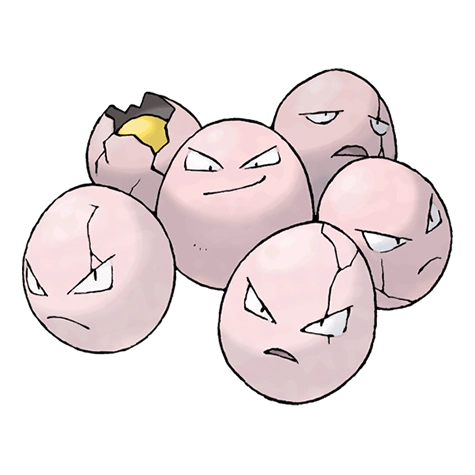

Назад
Экзеггут

Экзеггут — Покемон 1 поколения под номером 102 в Покедекс. Обитает он в регионе Канто и относится к Травяному Психическому типу. Экзеггут состоит из шести яиц, которые образуют тесно связанный кластер. Эти шесть яиц притягиваются друг к другу и вращаются. Когда на яйцах появляется больше трещин, этот Покемон близок к эволюции.
Тип:
Травяной
Психический
Эволюция
# 102 Экзеггут
=>
# 103 Экзеггутор